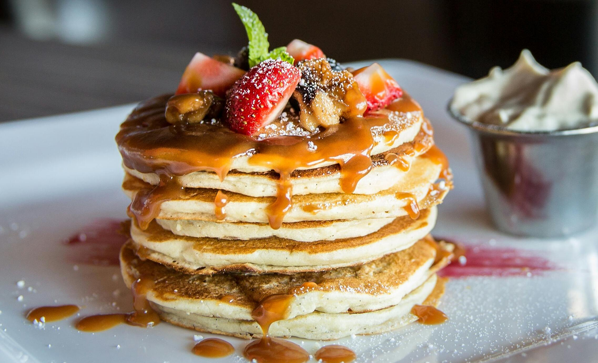
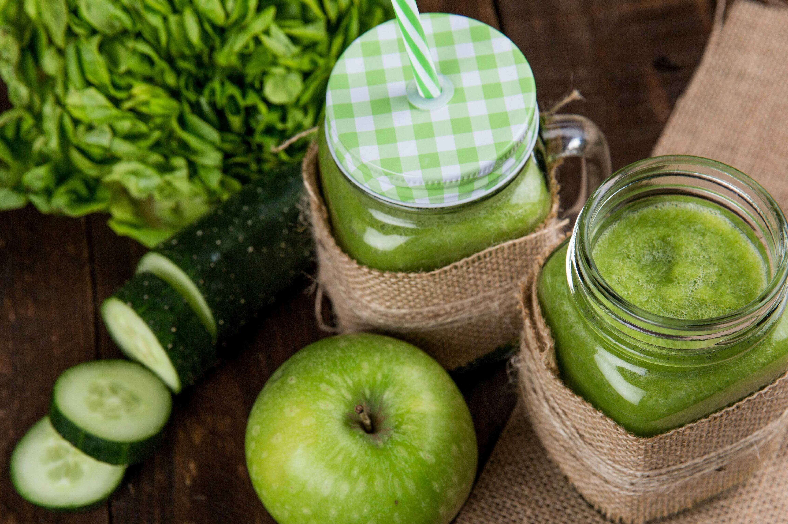

Recetas

Pancake
Ingredientes
- 1 taza de harina de trigo
- 2 cucharadas de azúcar (puedes ajustar la cantidad según tu gusto)
- 2 cucharaditas de polvo de hornear
- 1/2 cucharadita de sal
- 1 huevo 3/4 taza de leche
- 2 cucharadas de mantequilla derretida (o aceite vegetal)
- Aceite o mantequilla para engrasar la sartén Jarabe de arce, frutas frescas, o cualquier otro topping de tu elección
Procedimiento
- En un tazón grande, mezcla la harina, el azúcar, el polvo de hornear y la sal.
- En otro tazón, bate el huevo ligeramente. Luego, agrega la leche y la mantequilla derretida (o aceite vegetal) y mezcla bien.
- Vierte los ingredientes líquidos en los ingredientes secos y mezcla todo hasta que estén bien combinados. Es importante no mezclar en exceso para evitar que los pancakes queden duros.
- Calienta una sartén a fuego medio y engrásala ligeramente con aceite o mantequilla.
- Vierte aproximadamente 1/4 taza de masa para pancakes en la sartén caliente. Cocina hasta que aparezcan burbujas en la superficie de los pancakes y los bordes estén ligeramente dorados, aproximadamente 2-3 minutos.
- Con una espátula, da vuelta los pancakes y cocina por otros 1-2 minutos, o hasta que estén dorados por ambos lados y cocidos en el centro.
- Repite el proceso con el resto de la masa, engrasando la sartén según sea necesario.
- Sirve los pancakes calientes, acompañados de tu jarabe de arce, frutas o toppings favoritos.

Smoothie Verde
Ingredientes
- 1 taza de espinacas frescas
- 1/2 taza de kale fresco (opcional)
- 1/2 banana madura
- 1/2 manzana verde, sin corazón y cortada en trozos
- 1/2 manzana verde, sin corazón y cortada en trozos
- 1/4 taza de agua o leche de coco
- 1/4 taza de agua o leche de coco. miel a gusto
Procedimiento
- Coloca todos los ingredientes en una licuadora.
- Mezcla hasta obtener una consistencia suave y homogénea.
- Prueba y ajusta el dulzor agregando miel o stevia si es necesario.
- Sirve en un vaso y disfruta de tu smoothie verde